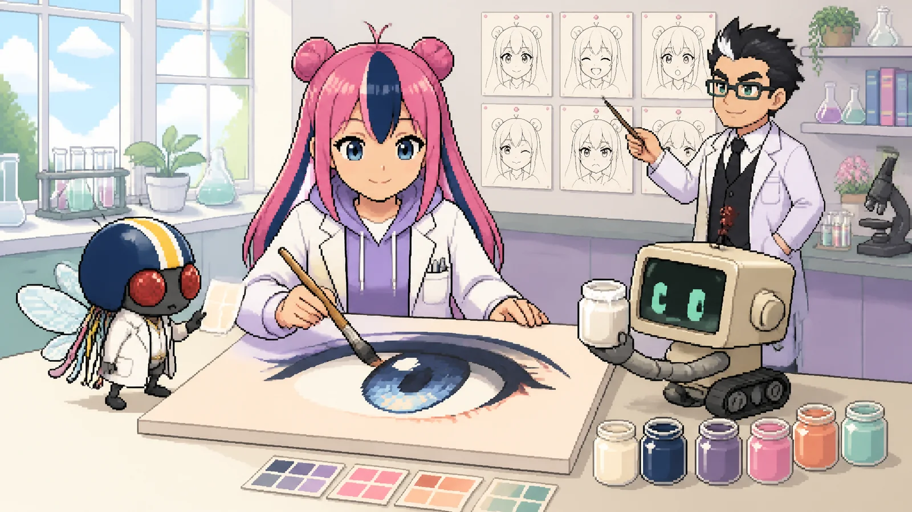
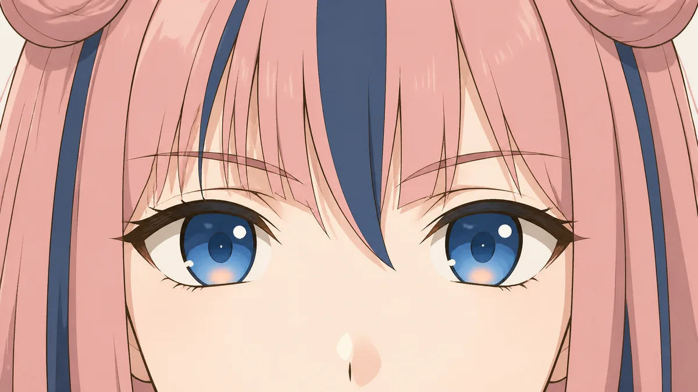
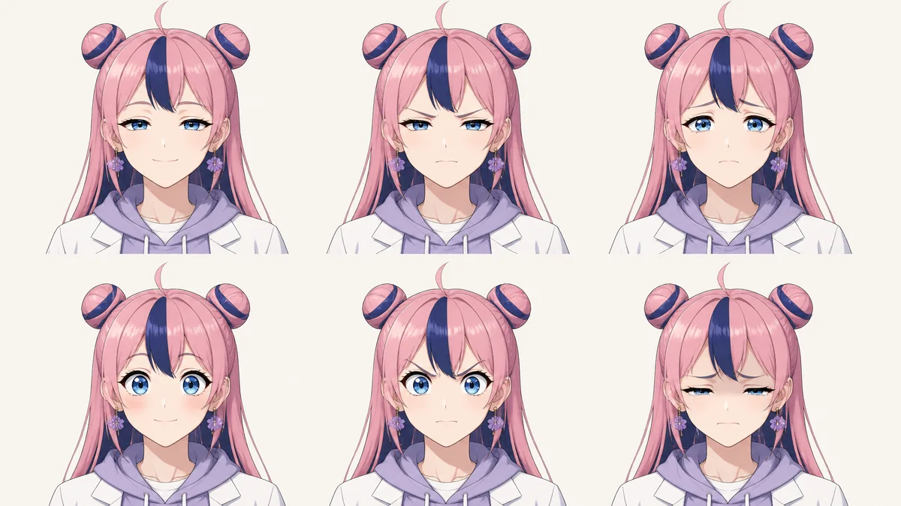
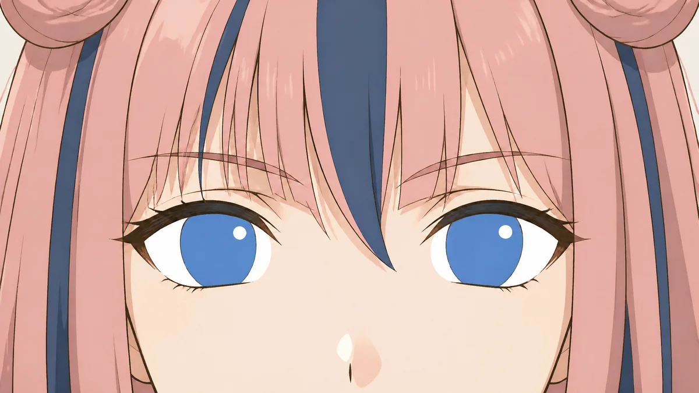
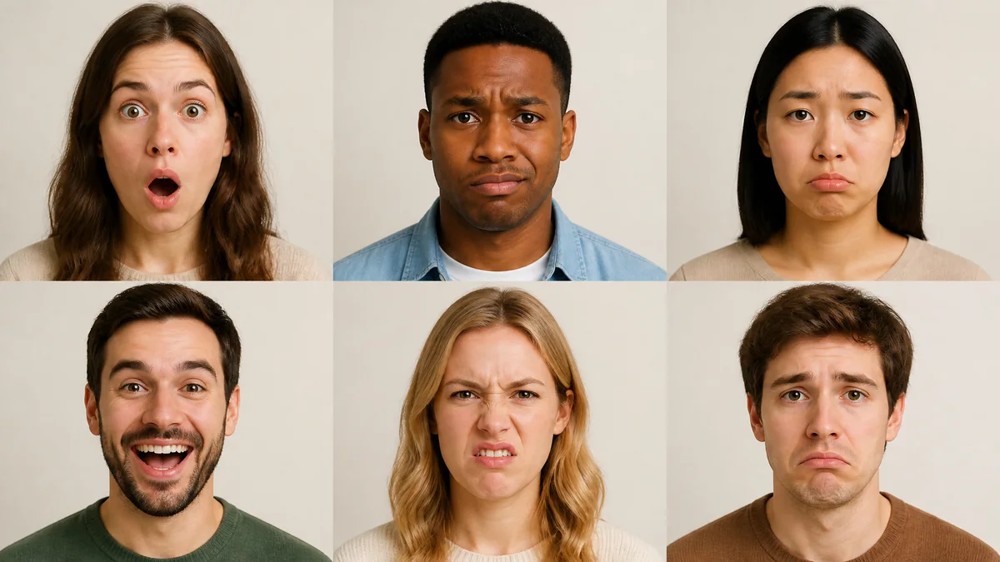
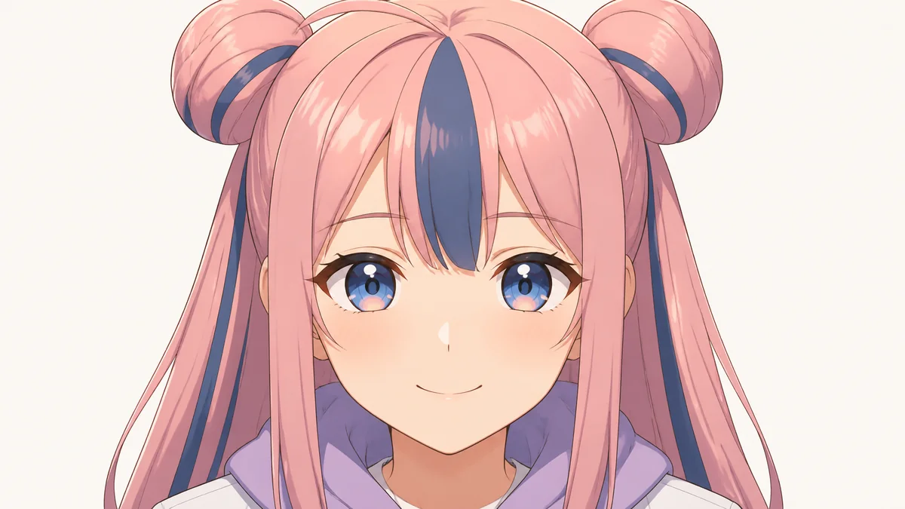
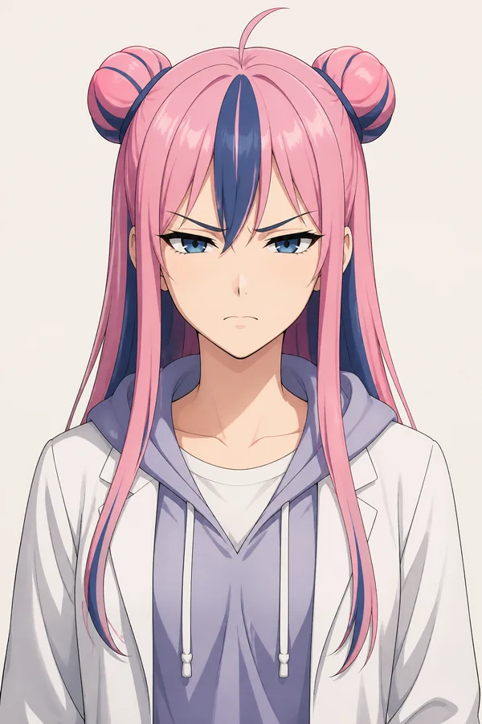
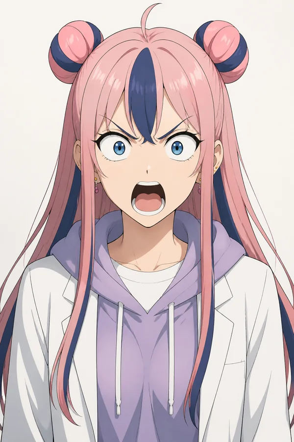

오늘의 과제

박사오늘은 하루의 눈을 칠한다. 흰자는 무슨 색일까?

주판봇흰자니까 흰색! 255, 255, 255! 가장 깨끗한 색입니다!

초파리 연구원얼굴에 그 색은 없어. 피부보다 조금 밝게. 그다음 눈동자에 그림자와 빛을 겹치자.

조수 하루제 흰자가 흰색이 아니었다니…

이번 모델은 조수 하루입니다. 주판봇은 흰자를 새하얗게, 눈동자를 한 가지 색으로 칠합니다. 초파리는 흰자부터 피부색에 맞춰 낮춥니다. 그리고 눈썹 하나로 하루의 기분을 바꿔 봅니다.
그림 실력·코드·수식을 몰라도 됩니다. 실험을 눌러 보며 따라오세요.
흰자를 순백 대신 피부색 쪽으로 기운 아주 옅은 색으로 칠하면 눈이 얼굴에 녹아듭니다
흰 그릇을 나무 식탁에 놓으면 그릇 아래쪽이 식탁 색을 받아 살짝 누렇게 보입니다.
애니메이션 색 지정에서는 흰자를 순백으로 두지 않고 장면마다 '흰자색'을 따로 정합니다. 밤 장면에서는 푸르게, 노을 장면에서는 주황 쪽으로 기울여 눈이 장면 빛에서 떨어지지 않게 합니다.


흰자 밝기(세 값의 평균)를 피부보다 조금 높고, 순백보다 낮게 두면 눈이 얼굴에 자연스럽게 붙습니다.
순백이면 눈만 떠 보이고, 피부와 같거나 어두우면 눈이 탁하고 아파 보입니다.
흰자 위쪽(위 눈꺼풀 아래)은 그늘이 지므로, 다음 단계의 곱하기 레이어로 한 번 더 어둡게 합니다.
AI가 그린 하루의 흰자가 새하얗고 경계가 또렷해, 눈이 반짝이긴 하는데 떠 보입니다. 괜찮을까요?
눈이 얼굴보다 앞에 붙은 스티커처럼 보입니다. 'off-white sclera slightly warmer than pure white, soft shadow under the upper eyelid'를 넣어 다시 요청하세요. 6부 f7과 같은 실패입니다.
눈동자 위쪽은 곱하기 레이어로 그늘을, 아래쪽은 더하기 레이어로 빛을 넣습니다

학교 수학으로 보면 — 비율과 곱셈 — 255를 1로 보면, 위 색 150은 약 0.59입니다. 곱하기는 밑색에 0.59를 곱하는 것과 같습니다.
| 식 조각 | 뜻 |
|---|---|
| 밑색 | 원래 칠한 눈동자 색(0~255) |
| 위 색 | 곱하기 레이어의 색. 255면 변화 없음, 낮을수록 어두워짐 |
| 불투명도 | 더하기 레이어를 얼마나 세게 겹칠지(0~1) |

젖은 길바닥은 같은 색이 고르게 어두워지고, 가로등 아래만 밝게 빛납니다.
디지털 채색에서는 밑색 레이어 위에 그림자용 곱하기 레이어, 빛용 더하기(발광 닷지·스크린 등) 레이어를 따로 둡니다. 레이어를 나눠 두면 장면이 바뀌어도 밑색을 다시 칠하지 않고 그림자·빛 레이어만 고칠 수 있습니다.
곱하기 레이어 색을 130~205로 두면 위쪽이 20~50% 어두워져 눈꺼풀 그늘이 됩니다.
더하기 레이어는 불투명도 40~70%가 알맞습니다. 100%면 빛이 하얗게 날아가고, 너무 낮으면 눈동자가 평평합니다.
레이어 순서는 밑색 → 곱하기(그림자) → 더하기(빛) → 보통 레이어(하이라이트)입니다. 하이라이트는 각막 표면에 맺힌 빛이라 맨 위에 올립니다.

AI가 칠한 눈동자가 아래쪽까지 하얗게 빛나 색이 거의 날아갔습니다. 화사하니 그대로 써도 될까요?
빛이 너무 세면 눈 색이 사라져 캐릭터 고정색이 흔들립니다. 'subtle warm glow on the lower iris, keep the blue iris color'처럼 빛의 세기와 원래 색을 함께 적습니다.
눈썹 끝이 올라가면 화, 내려가면 슬픔, 완만한 산이면 기쁨 — 그리고 눈을 뜬 정도로 감정의 세기를 조절합니다
화를 꾹 참는 사람은 눈을 가늘게 뜨고, 놀라며 화내는 사람은 눈을 크게 뜹니다.
표정 시트를 만들 때는 '기쁨·화·슬픔' 같은 종류를 가로로, '약하게·세게'를 세로로 놓고, 눈썹은 종류마다, 눈 뜬 정도는 세기마다 바꿔 그립니다. 같은 눈썹을 쓰면서 눈만 바꿔도 세기 차이가 납니다.
눈썹 끝이 8° 이상 올라가면 화, 8° 이상 내려가면 슬픔, 그 사이(완만한 산)면 기쁨으로 읽힙니다(이 실험의 예시 경계).
기쁨·화는 눈을 70% 아래로 가늘게 뜨면 조용하고 참는 쪽, 100%를 넘게 크게 뜨면 들뜨거나 터진 쪽입니다.
슬픔은 반대입니다. 눈을 크게 떠 눈동자가 크게 보이면 참는 슬픔, 가늘게 뜨면 북받친 슬픔입니다. 눈물을 참으려 눈을 크게 뜨는 모습을 떠올려 보세요.

'조용히 기뻐하는 얼굴'을 요청했는데 AI가 눈썹 끝을 올려 그렸습니다. 입은 웃고 있으니 괜찮을까요?
눈썹 끝이 올라가면 웃는 입이어도 화나거나 꿍꿍이가 있는 얼굴로 읽힙니다. 'soft gently arched eyebrows, not raised at the outer ends'를 넣거나 눈썹만 부분 수정합니다. 6부 f8과 같은 실패입니다.
눈은 그대로 두고 입만 바꿔도 감정이 크게 달라집니다
반짝이는 눈으로 입을 꾹 다물면 설렘을 참는 얼굴, 같은 눈으로 입을 크게 벌리면 환호하는 얼굴이 됩니다.
애니메이션 립싱크 작화에서는 눈과 입을 따로 그려 겹치는 경우가 많습니다. 그래서 같은 눈에 입만 바꿔 감정의 결을 미세하게 바꾸는 방법이 자주 쓰입니다.
눈으로 감정의 바탕(기대·화·슬픔·지침)을 고르고, 입으로 그 감정을 밖으로 내는 정도(삼킴·드러냄·터뜨림)를 고릅니다.
같은 눈물 눈도 다문 입이면 참는 울음, 크게 벌린 입이면 소리 내는 울음, 웃는 입이면 안도의 울음으로 읽힙니다.
씩 웃는 입은 어느 눈과 만나든 '꿍꿍이'의 뜻을 더합니다. 의도하지 않았다면 피합니다.
AI가 '기뻐서 우는 얼굴'을 그렸는데, 입이 크게 벌어져 서럽게 우는 얼굴처럼 보입니다. 어디를 고칠까요?
눈은 맞고 입이 감정을 너무 밖으로 냈습니다. 'teary eyes with a gentle relieved smile, mouth closed'처럼 입 모양을 따로 적고, 입만 부분 수정으로 다시 그립니다.
이 부에서 배운 원리를 그림 생성 AI(Genspark 등)로 직접 확인합니다. A는 이 페이지 그림을 실제로 만든 프롬프트, B는 원리를 하나 빼거나 바꾼 비교용 문장입니다.
참고 그림 내려받기: haru_anime_base · sia_anime_base · moa_anime_base · haru_sheet · sia_sheet · moa_sheet · doctor_sheet · fruitfly_sprites_6 · jupanbot_ref_genspark_v0 · pixel_style_ref_prev_cover
흰자 색, 위쪽 그림자, 아래쪽 빛, 하이라이트 두 개가 들어갔는지 봅니다.
첨부: refs/moa_anime_base.png, refs/moa_sheet.png, refs/haru_anime_base.png, refs/sia_anime_base.png, refs/doctor_sheet.png
Illustration, wide 16:9. Art style: high-quality anime illustration, clean confident lineart, two-tone cel shading, natural adult proportions. Match the attached reference images exactly (face, hair, colors, accessories). All characters are adults in their twenties (the Professor is an adult man in his thirties); modest outfits exactly as described. Extreme close-up of the eyes of Haru (adult lab assistant, long straight pink hair with navy streaks and a thick navy streak down the center of the bangs, two round hair buns on top, small ahoge, big blue eyes), wearing lavender hoodie with white drawstrings over a white t-shirt, open white knee-length lab coat, front view, from the eyebrows to the nose tip, filling the frame. Painted in layers: off-white sclera slightly warmer than pure white with a soft shadow under the upper eyelid; blue irises darker on the upper part and with a subtle warm glow on the lower part, the iris color stays blue; one large and one small highlight in each eye; line art around the light areas tinted brown, not pure black. Plain off-white studio background. No text, no letters, no numbers, no logos, no watermark, no revealing clothing, not childlike, no school uniform, not resembling any famous anime character.
Same image, keep the same framing. Change only: make the whites of the eyes pure bright white and the irises one flat blue with no shadow and no glow, a single highlight. Still no text.

실제 결과: 요청이 그대로 반영됐습니다. B는 흰자가 새하얗고 눈동자가 그림자·빛 없는 한 가지 파랑, 하이라이트 하나라서 눈만 오려 붙인 스티커처럼 납작합니다. 나머지(머리·코·구도)는 A와 같아 칠하기 조각의 효과를 가장 깨끗하게 비교할 수 있는 쌍입니다.
입은 그대로 두고 눈썹 방향과 눈 뜬 정도만으로 여섯 감정이 구별되는지 봅니다.
첨부: refs/moa_anime_base.png, refs/moa_sheet.png, refs/haru_anime_base.png, refs/sia_anime_base.png, refs/doctor_sheet.png
Illustration, wide 16:9. Art style: high-quality anime illustration, clean confident lineart, two-tone cel shading, natural adult proportions. Match the attached reference images exactly (face, hair, colors, accessories). All characters are adults in their twenties (the Professor is an adult man in his thirties); modest outfits exactly as described. Expression sheet of Haru (adult lab assistant, long straight pink hair with navy streaks and a thick navy streak down the center of the bangs, two round hair buns on top, small ahoge, big blue eyes), wearing lavender hoodie with white drawstrings over a white t-shirt, open white knee-length lab coat, six head-and-shoulders portraits, front view, in two rows of three, same size. Top row (mild): quiet joy (softly arched eyebrows, eyes narrowed), restrained anger (eyebrows raised at the outer ends, eyes narrowed), restrained sadness (eyebrows lowered at the outer ends, eyes wide open holding back tears). Bottom row (strong): excited joy (softly arched eyebrows, eyes wide open), explosive anger (eyebrows raised at the outer ends, eyes wide open), overflowing sadness (eyebrows lowered at the outer ends, eyes narrowed with tears). Mouths closed or gently set in all six so that the eyebrows and eye openness carry the emotion. Same person, adult. Light from the upper left. Plain off-white studio background. No text, no letters, no numbers, no logos, no watermark, no revealing clothing, not childlike, no school uniform, not resembling any famous anime character.
Same image, keep the same framing. Change only: give all six faces the same flat neutral eyebrows; keep the eyes and mouths as they are. Still no text.

실제 결과: B는 새 대화에서 만들었는데 하루가 사라지고, 서로 다른 실사 인물 여섯 명의 표정 사진이 나왔습니다. 눈썹을 같게 하라는 요청도 반영되지 않아 표정마다 눈썹이 다릅니다. 실습 1과 같은 까닭으로 보입니다. 이 비교는 A 프롬프트의 표정 문장에서 눈썹 부분을 'same flat neutral eyebrows'로 직접 바꾸고 하루 참고 그림을 첨부해 다시 만들어야 합니다.
눈 기울기·눈썹 방향처럼 작은 차이는 같은 대화에서 잘 반영되지 않습니다(03 얼굴 편의 실제 결과). 차이가 약하면 새 대화에서 만들되, 'Same image'로 시작하는 B 문장만 넣지 마세요. 이번 편 실습 1·2의 B처럼 가리킬 그림이 없어 캐릭터가 사라질 수 있습니다. A 프롬프트 안의 해당 문장을 직접 고쳐 한 덩어리로 넣고, 참고 그림을 첨부하세요.
이 부의 원리를 내 손으로 프롬프트에 옮겨 보는 과제 두 개입니다. 과제마다 목표 → 순서 → 넣을 프롬프트 → 확인할 것 → 예상 결과 → 자주 생기는 문제 순서로 적었습니다. 예상 결과 그림은 아래 프롬프트로 실제로 만든 그림입니다. 요청과 다르게 나온 곳은 '실제 결과'에 그대로 적었습니다. 결과는 매번 조금씩 다르니, 그림이 똑같지 않아도 '확인할 것'이 맞으면 성공입니다.
목표2부의 칠하기 순서(흰자 색 → 위 그림자 → 아래 빛 → 하이라이트 → 갈색 선)를 다섯 조각의 문장으로 적어 하루의 눈을 만듭니다.
왜 이 연습인가'beautiful sparkling eyes'만 쓰면 흰자가 순백이고 눈동자가 한 색인 스티커 눈이 자주 나옵니다(6부 f7). 칠하기를 순서대로 적으면 레이어로 칠한 듯한 눈이 나옵니다.
첨부할 참고 그림: refs/haru_anime_base.png, refs/haru_sheet.png — 참고 그림은 위 직접 만들어 보기에서 내려받을 수 있습니다.
Illustration, wide 16:9. Art style: high-quality anime illustration, clean confident lineart, two-tone cel shading, natural adult proportions. Match the attached reference images exactly (face, hair, colors, accessories). All characters are adults in their twenties (the Professor is an adult man in his thirties); modest outfits exactly as described. Close-up of the face of Haru (adult lab assistant, long straight pink hair with navy streaks and a thick navy streak down the center of the bangs, two round hair buns on top, small ahoge, big blue eyes), wearing lavender hoodie with white drawstrings over a white t-shirt, open white knee-length lab coat, front view, from the eyebrows to the chin, gentle smile. Eye painting (most important): 1) off-white sclera slightly warmer than pure white with a soft shadow under the upper eyelid; 2) the upper part of each blue iris darker; 3) a subtle warm glow on the lower part of the iris while the iris stays blue; 4) one large and one small highlight in each eye; 5) line art around the light areas tinted brown, not pure black. Light from the upper left. Plain off-white studio background. No text, no letters, no numbers, no logos, no watermark, no revealing clothing, not childlike, no school uniform, not resembling any famous anime character.

실제 결과: 성공. 흰자는 옅은 미색이고, 눈동자 위는 짙은 남색, 아래에는 분홍·주황 빛이 돌며 하이라이트가 크고 작게 둘입니다. 눈 색은 여전히 파랑입니다.
| 문제 | 이렇게 고칩니다 |
|---|---|
| 아래쪽 빛이 너무 세서 눈이 주황이다 | 'subtle warm glow, the iris stays blue'를 'very subtle'로 바꾸고, 'blue irises' 를 맨 앞에 한 번 더 적습니다. |
| 흰자가 여전히 새하얗다 | 'not pure white'를 덧붙이고 'cream-tinted sclera'로 바꿔 봅니다. |
| 하이라이트가 하나뿐이다 | 'exactly two highlights per eye, one large and one small'로 개수를 숫자로 적습니다. |
더 해 보기1번 조각(흰자 색)만 빼고 새 대화에서 다시 만들어, 흰자 색 하나가 얼마나 차이를 내는지 비교해 보세요.
목표2부 3단계의 원리(눈썹 방향 = 종류, 눈 뜬 정도 = 세기)대로, 눈썹은 같게 두고 눈 뜬 정도만 바꿔 하루의 '참는 화'와 '터진 화'를 따로 만듭니다.
왜 이 연습인가'angry'만 쓰면 도구가 세기를 마음대로 정합니다. 눈썹은 같은 문장으로, 눈 뜬 정도만 다르게 적으면 세기만 바뀐 두 그림이 나옵니다. 03 얼굴 편에서는 같은 대화에서 작은 변화를 요청하면 도구가 앞 그림을 그대로 따라 그려 차이가 거의 나지 않았습니다. 그래서 비교할 두 그림은 서로 다른 새 대화에서 만들고, 바뀌는 곳을 분명하게 과장해 적습니다.
첨부할 참고 그림: refs/haru_anime_base.png, refs/haru_sheet.png — 참고 그림은 위 직접 만들어 보기에서 내려받을 수 있습니다.
Illustration, vertical 2:3. Art style: high-quality anime illustration, clean confident lineart, two-tone cel shading, natural adult proportions. Match the attached reference images exactly (face, hair, colors, accessories). All characters are adults in their twenties (the Professor is an adult man in his thirties); modest outfits exactly as described. Front view, chest-up portrait of Haru (adult lab assistant, long straight pink hair with navy streaks and a thick navy streak down the center of the bangs, two round hair buns on top, small ahoge, big blue eyes), wearing lavender hoodie with white drawstrings over a white t-shirt, open white knee-length lab coat, restrained anger. Expression (most important): eyebrows raised at the outer ends and pulled together at the inner ends; eyes NARROWED to about half open; mouth firmly closed. A quiet, held-in anger. Light from the upper left. Plain off-white studio background. No text, no letters, no numbers, no logos, no watermark, no revealing clothing, not childlike, no school uniform, not resembling any famous anime character.

Illustration, vertical 2:3. Art style: high-quality anime illustration, clean confident lineart, two-tone cel shading, natural adult proportions. Match the attached reference images exactly (face, hair, colors, accessories). All characters are adults in their twenties (the Professor is an adult man in his thirties); modest outfits exactly as described. Front view, chest-up portrait of Haru (adult lab assistant, long straight pink hair with navy streaks and a thick navy streak down the center of the bangs, two round hair buns on top, small ahoge, big blue eyes), wearing lavender hoodie with white drawstrings over a white t-shirt, open white knee-length lab coat, explosive anger. Expression (most important): eyebrows raised at the outer ends and pulled together at the inner ends, the same eyebrow shape as a restrained anger; eyes OPENED VERY WIDE, whites visible around the irises; mouth open shouting. Light from the upper left. Plain off-white studio background. No text, no letters, no numbers, no logos, no watermark, no revealing clothing, not childlike, no school uniform, not resembling any famous anime character.

실제 결과: 성공. 두 그림 모두 눈썹 끝이 올라갔고, ①은 눈을 가늘게 뜨고 입을 다물어 참는 화, ②는 눈을 크게 뜨고 입을 벌려 터진 화로 읽힙니다. 두 그림 모두 20대 성인으로 보입니다.
| 문제 | 이렇게 고칩니다 |
|---|---|
| ①도 크게 화낸다 | 'mouth firmly closed, calm posture'를 덧붙이고, 'eyes narrowed to about half open'을 맨 앞으로 옮깁니다. |
| ②가 놀란 얼굴이 됐다 | 놀람은 눈썹이 올라갑니다. 'eyebrows pulled DOWN at the inner ends'를 분명히 적습니다. |
| 두 그림의 머리 모양이 다르다 | 참고 그림을 두 대화 모두에 첨부했는지 확인합니다. |
더 해 보기같은 방법으로 슬픔을 만들어 보세요. 슬픔은 반대로 눈을 크게 뜨면 참는 쪽, 가늘게 뜨면 북받친 쪽입니다.

| 항목 | 주판봇 | 초파리 |
|---|---|---|
| 닮음(하루다운가) | 6 | 8 |
| 원리(흰자·레이어·눈썹) | 2 | 9 |
| 자연스러움 | 4 | 9 |
| 합계 | 12 | 26 |


점수는 이야기 속 예시입니다. 실제 그림을 평가한 값이 아닙니다.
| 주제 | 한 줄 | 작업에서는 |
|---|---|---|
| 1단계 흰자 | 피부보다 조금 밝고 순백보다 낮게, 따뜻한 쪽으로 | 흰자색을 장면마다 정하기 |
| 2단계 레이어 | 곱하기 = 밑색 × 위 색 ÷ 255, 더하기 = 밑색 + 색 × 불투명도 | 더하기는 40~70% |
| 3단계 눈썹·눈 | 눈썹 방향 = 종류, 눈 뜬 정도 = 세기(슬픔은 반대) | 표정 시트를 종류 × 세기로 |
| 4단계 입 | 입 = 감정을 밖으로 내는 정도 | 눈은 두고 입만 바꿔 결 바꾸기 |

이 페이지에 나온 개념·방법·비유·쓰임을 모았습니다. 검색하고, "설명 보러 가기"로 본문에 돌아갑니다.
지식 색인을 출처와 함께 파일로 내려받습니다. 서지 관리는 BibTeX·RIS, 온톨로지 편집은 Turtle, 그래프 도구는 CSV, 여러 페이지 합치기는 kg.json입니다.